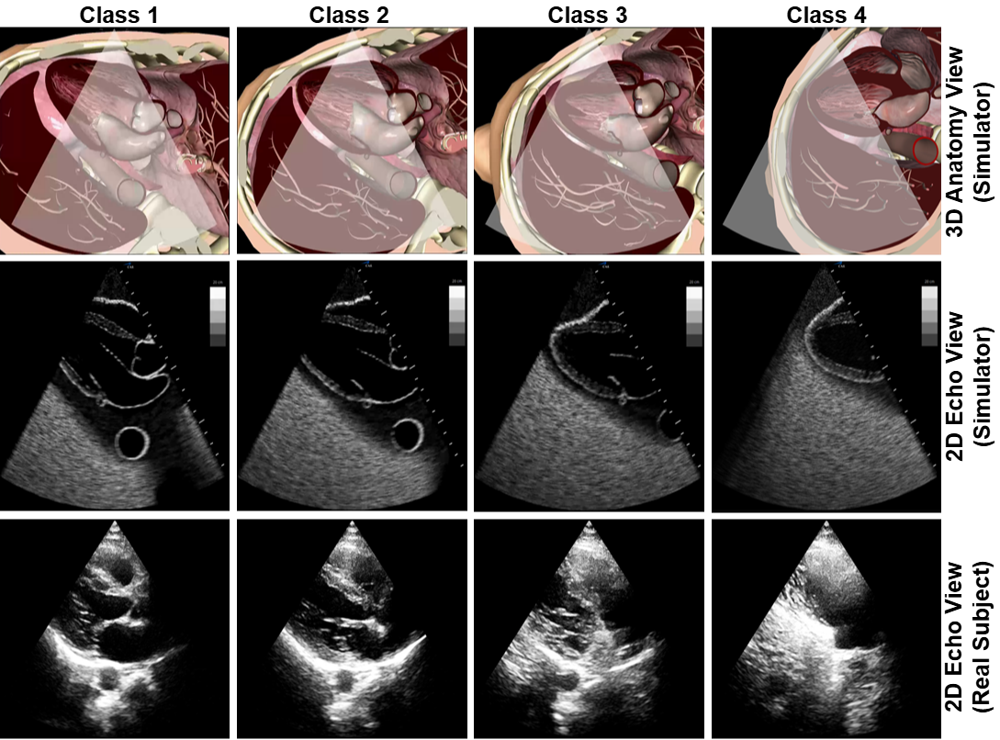
We introduce Guide2Heart, a unique dataset comprising labelled ultrasound images for
echocardiographic guidance. It targets the Parasternal Long-Axis (PLAX) view, a clinically key
cardiac imaging plane. The labelled data consists of four categories—Standard PLAX, Almost PLAX,
Nearby PLAX, and Away from PLAX. Our dataset facilitates the development of real-time
view-proximity-based guidance systems that assist echocardiographers in efficiently acquiring
the standard PLAX view. Specifically, Guide2Heart includes 3322 ultrasound images from 67
studies conducted on 23 subjects. To validate the effectiveness of our dataset, we conduct
multiple experiments using various CNN models and a ViT network, reporting K-fold
cross-validation results. Our experimental findings highlight the potential for automated
guidance in acquiring standard echocardiographic views, ultimately improving the efficiency and
standardization of echocardiographic examinations.
Read More
Fine-Grained Rib Fracture Diagnosis with Hyperbolic Embeddings: A Detailed
Annotation Framework and Multi-label Classification Model
MICCAI, 2025
View Paper

ccurate rib fracture identification and classification are es-
sential for treatment planning. However, existing datasets often lack fine-
grained annotations, particularly regarding rib fracture characterization,
type, and precise anatomical location on individual ribs. To address this,
we introduce a novel rib fracture annotation protocol tailored for fracture
classification. Further, we enhance fracture classification by leveraging
cross-modal embeddings that bridge radiological images and clinical de-
scriptions. Our approach employs hyperbolic embeddings to capture the
hierarchical nature of fracture, mapping visual features and textual de-
scriptions into a shared non-Euclidean manifold. This framework enables
more nuanced similarity computations between imaging characteristics
and clinical descriptions, accounting for the inherent hierarchical rela-
tionships in fracture taxonomy. Experimental results demonstrate that
our approach outperforms existing methods across multiple classification
tasks, with average recall improvements of 6% on the AirRib dataset and
17.5% on the public RibFrac dataset. The code and annotation files can
be accessed at https://github.com/ribfracture123/classification
Read More
Uncertainty-Aware Cross-Modal Attention for
Breast Cancer Classification in Ultrasound
Imaging
DeepBreath@MICCAI, 2025
View Paper
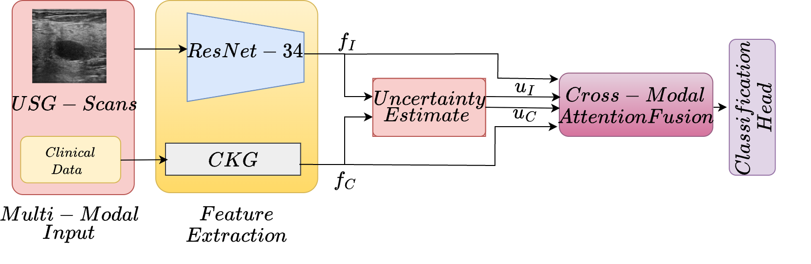
We propose an uncertainty-aware cross-modal attention frame-
work for breast cancer classification using ultrasound imaging and struc-
tured clinical data. Our model incorporates a Clinical Knowledge Gate
(CKG) that adaptively weights clinical features based on medical domain
relevance, and an uncertainty-aware attention mechanism that dynam-
ically fuses modalities based on confidence estimates. We employ con-
trastive learning to enhance alignment between modalities and address
class imbalance through an adaptive focal loss with uncertainty regu-
larization. Evaluated on the Breast-Lesions-USG dataset, our method
outperforms traditional and deep learning baselines, achieving 90% ac-
curacy and 98% recall. Grad-CAM visualizations confirm alignment with
radiological markers, while uncertainty estimates improve interpretabil-
ity and clinical trust.
Read More
Survival Prediction in Lung Cancer through Multi-Modal Representation Learning
WACV, 2025
View Paper
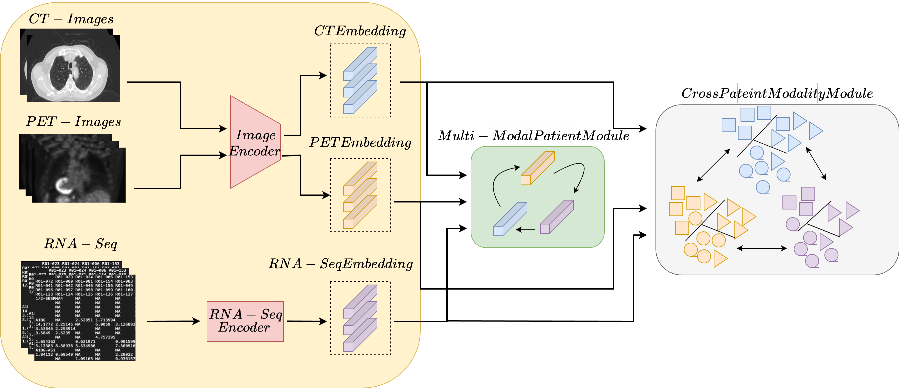
Survival prediction is a crucial task associated with can-
cer diagnosis and treatment planning. This paper presents
a novel approach to survival prediction by harnessing com-
prehensive information from CT and PET scans, along with
associated Genomic data. Current methods rely on either
a single modality or the integration of multiple modalities
for prediction without adequately addressing associations
across patients or modalities. We aim to develop a ro-
bust predictive model for survival outcomes by integrating
multi-modal imaging data with genetic information while
accounting for associations across patients and modali-
ties. We learn representations for each modality via a self-
supervised module and harness the semantic similarities
across the patients to ensure the embeddings are aligned
closely. However, optimizing solely for global relevance
is inadequate, as many pairs sharing similar high-level
semantics, such as tumor type, are inadvertently pushed
apart in the embedding space. To address this issue, we
use a cross-patient module (CPM) designed to harness
inter-subject correspondences. The CPM module aims to
bring together embeddings from patients with similar dis-
ease characteristics. Our experimental evaluation of the
dataset of Non-Small Cell Lung Cancer (NSCLC) patients
demonstrates the effectiveness of our approach in predicting
survival outcomes, outperforming state-of-the-art methods
Read More

Thoracic trauma often results in rib fractures, which demand swift
and accurate diagnosis for effective treatment. However, detect-
ing these fractures on rib CT scans poses considerable challenges,
involving the analysis of many image slices in sequence. Despite
notable advancements in algorithms for automated fracture seg-
mentation, the persisting challenges stem from the diverse shapes
and sizes of these fractures. To address these issues, this study
introduces a sophisticated deep-learning model with an auxiliary
classification task designed to enhance the accuracy of rib frac-
ture segmentation. The auxiliary classification task is crucial in
distinguishing between fractured ribs and negative regions, en-
compassing non-fractured ribs and surrounding tissues, from the
patches obtained from CT scans. By leveraging this auxiliary task,
the model aims to improve feature representation at the bottleneck
layer by highlighting the regions of interest. Experimental results
on the RibFrac dataset demonstrate significant improvement in
segmentation performance
Read More
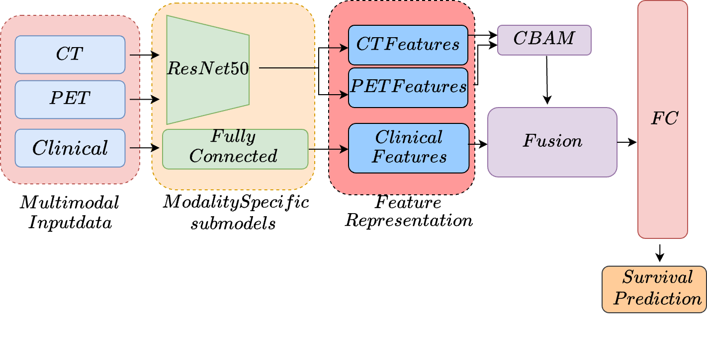
Accurate survival prediction in head and neck cancer (HNC) is essential for guiding clinical
decision-making and optimizing treatment strategies. Traditional models, such as Cox
proportional hazards, have been widely used but are limited in their ability to handle complex
multimodal data. This paper proposes a deep learning-based approach leveraging CT and PET
imaging modalities to predict survival outcomes in HNC patients. Our method integrates feature
extraction with a Convolutional Block Attention Module (CBAM) and a multi-modal data fusion
layer that combines imaging data to generate a compact feature representation. The final
prediction is achieved through a fully parametric discrete-time survival model, allowing for
flexible hazard functions that overcome the limitations of traditional survival models. We
evaluated our approach using the HECKTOR and HEAD-NECK-RADIOMICSHN1 datasets, demonstrating its
superior performance compared to conventional statistical and machine learning models. The
results indicate that our deep learning model significantly improves survival prediction
accuracy, offering a robust tool for personalized treatment planning in HNC.
Read More
MLVICX: Multi-Level Variance-Covariance Exploration for Chest X-ray
Self-Supervised Representation Learning
IEEE Journal of Biomedical and Health Informatics, 2024
View
Paper
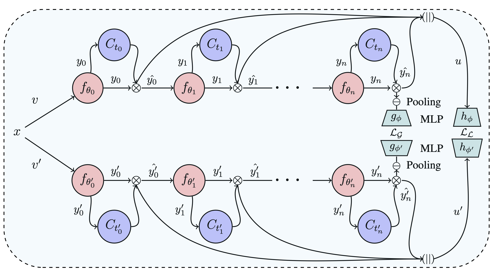
Self-supervised learning (SSL) is potentially useful in reducing the need for manual annotation
and making deep learning models accessible for medical image analysis tasks.
By leveraging the representations learned from unlabeled data, self-supervised models perform
well on tasks that require little to no fine-tuning. However, for medical images,
like chest X-rays, characterized by complex anatomical structures and diverse clinical
conditions, a need arises for representation learning techniques that encode fine-grained
details while preserving the broader contextual information. In this context, we introduce
MLVICX (Multi-Level Variance-Covariance Exploration for Chest X-ray Self-Supervised
Representation Learning),
an approach to capture rich representations in the form of embeddings from chest X-ray images.
Central to our approach is a novel multi-level variance and covariance exploration strategy that
effectively
enables the model to detect diagnostically meaningful patterns while reducing redundancy. MLVICX
promotes the retention of critical medical insights by adapting global and local contextual
details and
enhancing the variance and covariance of the learned embeddings. We demonstrate the performance
of MLVICX in advancing self-supervised chest X-ray representation learning through comprehensive
experiments.
The performance enhancements we observe across various downstream tasks highlight the
significance of the proposed approach in enhancing the utility of chest X-ray embeddings for
precision medical diagnosis
and comprehensive image analysis. For pertaining, we used the NIH-Chest X-ray dataset, while for
downstream tasks, we utilized NIH-Chest X-ray, Vinbig-CXR, RSNA pneumonia, and SIIM-ACR
Pneumothorax datasets.
Overall, we observe up to 3% performance gain over SOTA SSL approaches in various downstream
tasks. Additionally, to demonstrate the generalizability of the proposed method, we conducted
additional experiments
on fundus images and observed superior performance on multiple datasets.
Read More
CoBooM: Codebook Guided Bootstrapping for Medical Image Representation Learning
MICCAI, 2024
View Paper
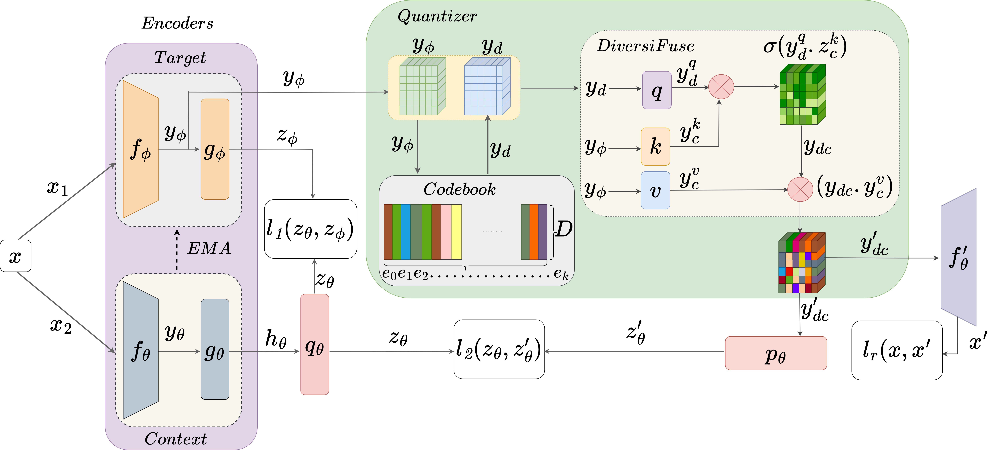
Self-supervised learning (SSL) has emerged as a promising paradigm for medical image analysis by
harnessing unannotated data. Despite their potential, the existing SSL approaches overlook the
high anatomical similarity inherent in medical images. This makes it challenging for SSL
methods to capture diverse semantic content in medical images consistently. This work introduces
a novel and generalized solution that implicitly exploits anatomical similarities by integrating
codebooks in SSL. The codebook serves as a concise and informative dictionary of visual
patterns, which not only aids in capturing nuanced anatomical details but also facilitates the
creation of robust and generalized feature representations. In this context, we propose CoBooM,
a novel framework for self-supervised medical image learning by integrating continuous
and discrete representations. The continuous component ensures the preservation of fine-grained
details, while the discrete aspect facilitates coarse-grained feature extraction through the
structured embedding space. To understand the effectiveness of CoBooM, we conduct a
comprehensive
evaluation of various medical datasets encompassing chest X-rays and fundus images. The
experimental results reveal a significant performance gain in classification and segmentation
tasks.
Read More
IDQCE: Instance Discrimination Learning through Quantized Contextual Embeddings
for Medical Images
ICPR, 2024
View Paper
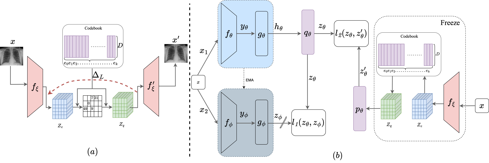
Self-supervised pre-training is effective in learning discrim-
inative features from unlabeled medical images. However, typical self-
supervised models lead to sub-optimal representations due to negligence
of high anatomical similarity present in the medical images. This af-
fects the negative and positive pairs in discriminative self-supervised
models to learn view-invariant representations. Various methods are pro-
posed to address this issue. However, many of them either concentrate
on preserving pixel-level details or offer solutions for specific modali-
ties. In this context, we propose a generalized solution to leverage the
anatomical similarities while relaxing the requirements of complex pixel-
preservation learning. Specifically, we introduce IDQCE: Instance Dis-
crimination Learning through Quantized Contextual Embeddings. The
proposed approach leverages the sparse discrete contextual information
to guide the self-supervised framework to learn more informative repre-
sentations for medical images. We evaluate the representations learned
by IDQCE through comprehensive experiments and observe more than
3% performance gain under linear evaluation protocol over other SOTA
approaches in multiple downstream tasks.
Read More
Towards Soft-robotic Assistance of Ultrasonic Imaging
2024 IEEE South Asian Ultrasonics Symposium (SAUS)
View
Paper
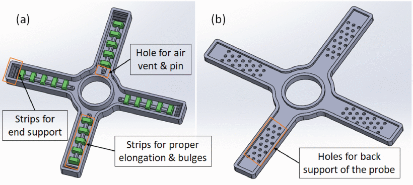
Sonography plays a critical role in diagnosing various health conditions, but operator-dependent
limitations impact imaging quality and consistency.
Robotic scanning has emerged as a solution to enhance imaging consistency while reducing
operator dependency.
This paper presents a compliant soft robotic gripper designed to assist in sonography procedures
using hyperelastic materials.
The gripper design features four channels with five inflatable strips per channel constructed
with Polydimethylsiloxane (PDMS), allowing for spatial bending when pressurized.
Fabrication involves CAD modelling, 3D printing, and silicon casting method-based curing and
finally sealed with fabric and silicon.
Experimental results demonstrate the gripper’s capability, with a single channel achieving a
deflection of approximately 57 degrees.
Further optimization of channel length, number of channels, and number of strip configurations
and their design is required through analytical or simulation work.
The study showcases the feasibility of integrating soft robotics into medical imaging,
potentially revolutionizing sonography practices and patient care.
Read More
Translating Imaging to Genomics: Leveraging Transformers for Predictive
Modeling
CVPR Workshop : WiCV, 2024
View Paper
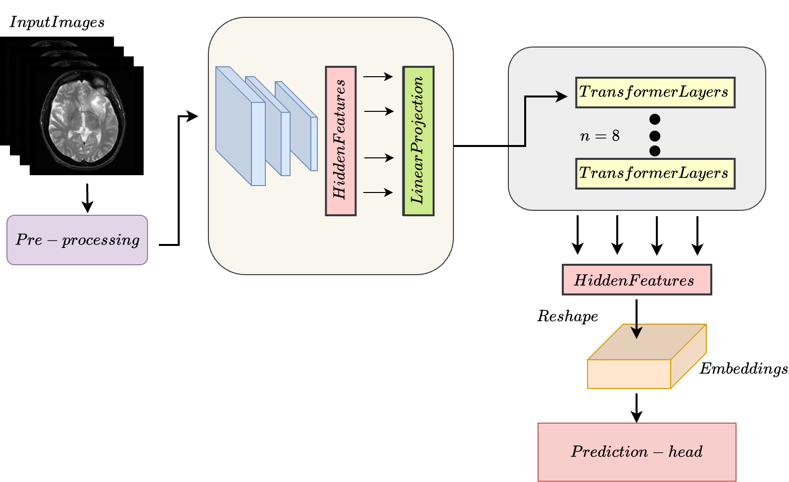
In this study, we present a novel approach for predicting genomic information from medical
imaging modalities using a transformer-based model.
We aim to bridge the gap between imaging and genomics data by leveraging transformer networks,
allowing for accurate genomic profile
predictions from CT/MRI images. Presently most studies rely on the use of whole slide images
(WSI) for the association, which are obtained
via invasive methodologies. We propose using only available CT/MRI images to predict genomic
sequences.
Our transformer based approach is able to efficiently generate associations between multiple
sequences based on CT/MRI images alone.
This work paves the way for the use of non-invasive imaging modalities for precise and
personalized healthcare,
allowing for a better understanding of diseases and treatment.
Read More
Large Scale Time-Series Representation Learning via Simultaneous Low- and
High-Frequency Feature Bootstrapping
IEEE, Transactions on Neural Networks and Learning Systems 2023
View
Paper
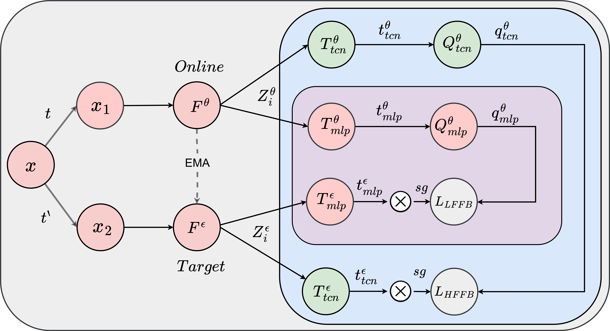
Learning representations from unlabeled time series data is a challenging problem. Most existing
self-supervised
and unsupervised approaches in the time-series domain fall short in capturing low- and
high-frequency features at the same time. As a result, the generalization ability of the learned
representations remains limited. Furthermore, some of these methods employ large-scale models
like transformers or rely
on computationally expensive techniques such as contrastive learning. To tackle these problems,
we propose a non-contrastive
self-supervised learning approach that efficiently captures low-and high-frequency features in a
cost-effective manner. The
proposed framework comprises a siamese configuration of a deep neural network with two
weight-sharing branches which are
followed by low- and high-frequency feature extraction modules. The two branches of the proposed
network allow bootstrapping of the latent representation by taking two different augmented
views of raw time series data as input. The augmented views are created by applying random
transformations sampled from
a single set of augmentations. The low- and high-frequency feature extraction modules of the
proposed network contain
a combination of multilayer perceptron (MLP) and temporal convolutional network (TCN) heads
respectively, which capture
the temporal dependencies from the raw input data at various scales due to the varying receptive
fields. To demonstrate the
robustness of our model, we performed extensive experiments and ablation studies on five
real-world time-series datasets. Our
method achieves state-of-art performance on all the considered datasets.
Read More
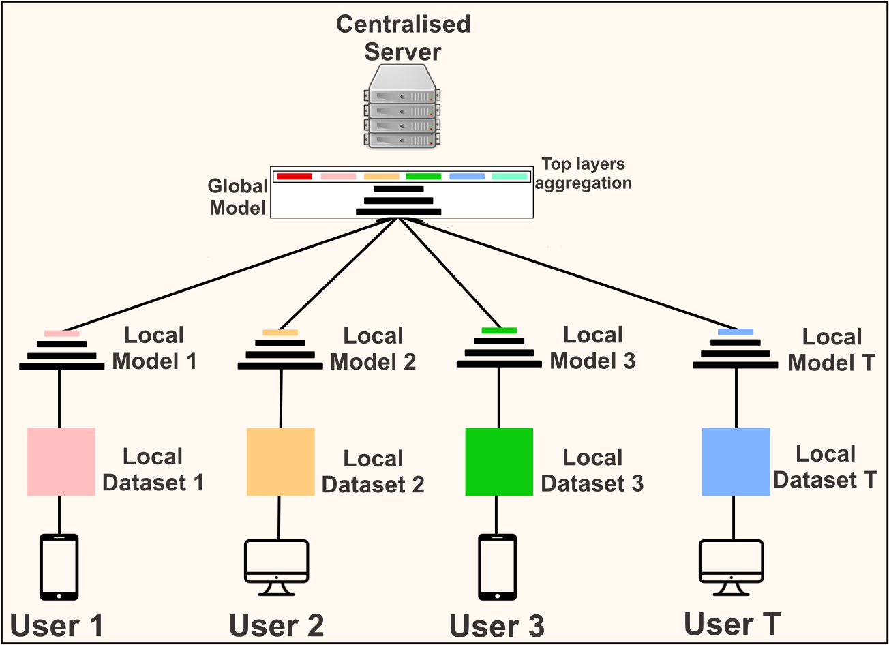
Federated learning is a distributed machine learning setting in which clients train a global
model on their local
data and share their knowledge with the server in form of the trained model while maintaining
privacy of the data.
The server aggregates clients' knowledge to create a generalized global model. Two major
challenges faced in this
process are data heterogeneity and high communication cost. We target the latter and propose a
simple approach,
BAFL (Federated Learning for Base Ablation) for cost effective communication in federated
learning. In contrast
to the common practice of employing model compression techniques to reduce the total
communication cost, we propose
a fine-tuning approach to leverage the feature extraction ability of layers at different depths
of deep neural
networks. We use a model pretrained on general-purpose large scale data as a global model. This
helps in better
weight initialization and reduces the total communication cost required for obtaining the
generalized model. We
achieve further cost reduction by focusing only on the layers responsible for semantic features
(data specific
information). The clients fine tune only top layers on their local data. Base layers are ablated
while transferring
the model and clients communicate parameters corresponding to the remaining layers. This results
in reduction of
communication cost per round without compromising the accuracy. We evaluate the proposed
approach using VGG-16 and
ResNet-50 models on datasets including WBC, FOOD-101, and CIFAR-10 and obtain up to two orders
of reduction in
total communication cost as compared to the conventional federated learning. We perform
experiments in both IID and
Non-IID settings and observe consistent improvements.
Read More
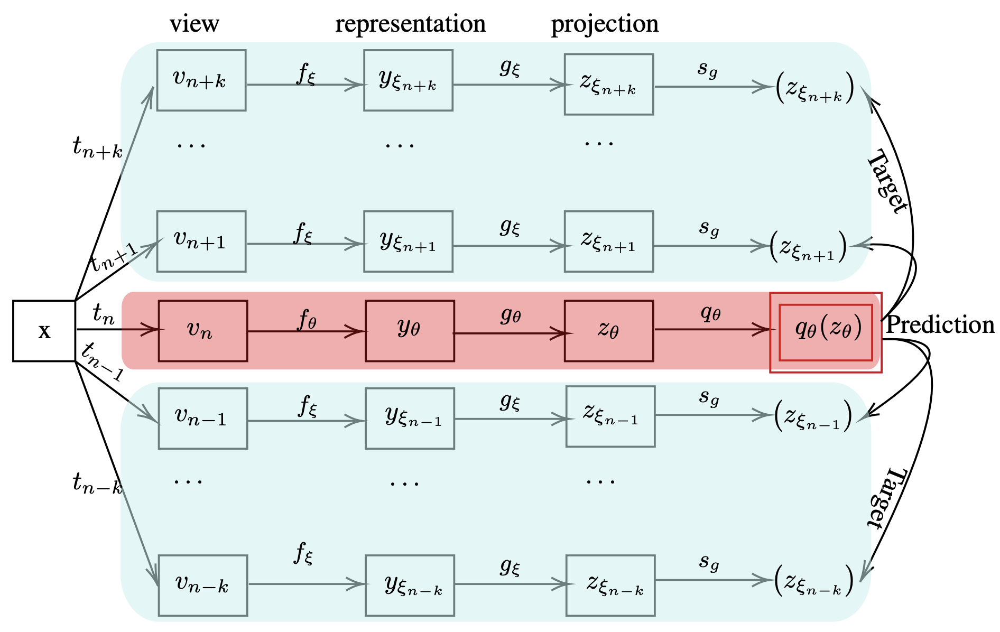
BYOL leads migration of self-supervised learning techniques from contrastive
to non-constative paradigm. Non-constative techniques do not require negative
pairs to learn meaningful representations from the data. Their success mainly
depends on the stochastic composition of data augmentation techniques and the
siamese configuration of deep neural networks. However, BYOL in its original
form is limited to only two augmented views per training cycle. This motivates us
to extend BYOL from a single target network branch to multiple branches, which
enables simultaneous analysis of multiple augmented views of an input image.
Increasing branches of the target networks marginally increase the computational
cost as each branch is updated only using exponential moving average of online
network’s parameters. We demonstrate superior performance of Multi-Target
BYOL on several vision datasets by evaluating the representations learned by the
online network using linear evaluation protocols.
Read More
MBGRLp: Multiscale Bootstrap Graph Representation Learning on Pointcloud
(Student Abstract)
AAAI 2022
View
Paper
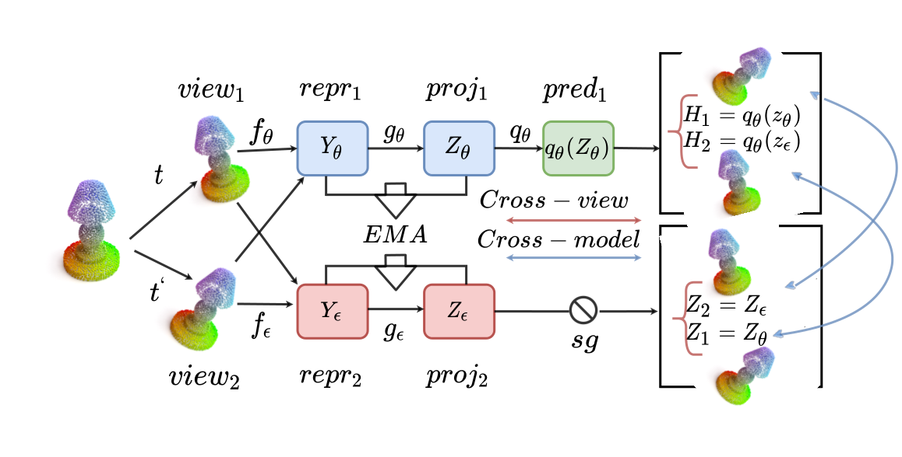
Point cloud has gained a lot of attention with the availability of a large amount of point cloud
data and increasing applications like city planning and self-driving cars. However, current
methods, often rely on labeled information and costly processing, such as converting point cloud
to voxel. We propose a self-supervised learning approach to tackle these problems, combating
labelling and additional memory cost issues. Our proposed method achieves results comparable to
supervised and unsupervised baselines on the widely used benchmark datasets for self-supervised
point cloud classification like ShapeNet, ModelNet10/40.
Read More
Our collaborations
All India Institute of Medical Sciences, Jodhpur
University of York, London (UK)
Indian Institute of Technology Delhi
All India Institute of Medical Sciences, Delhi